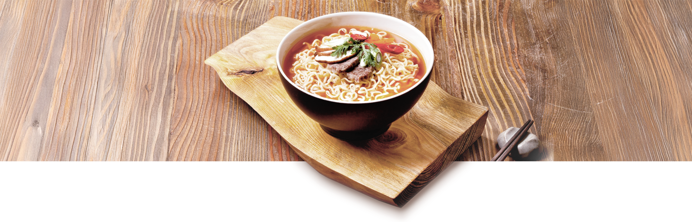

본문콘텐츠영역
K-Food 글로벌 열풍을 선도하는
삼양식품

업계 최초로 한국 라면을 베트남에 수출하여 해외 시장에 진출한 삼양식품은
현재 전 세계 90여개 국으로 제품을 수출하며 K-Food 열풍을 이끌고 있습니다.
-
국내 식품 산업에 큰 획을 긋다
1961년 창업한 삼양식품은 '정직과 신용'의 창업정신으로 한국 식품산업의 새로운 영역을 개척하며 성장해왔습니다.
삼양역사관arrow_right_alt -
K-Food 열풍을 선도하다
삼양식품의 해외 진출은 불닭브랜드의 인기로 본격화되면서
회사소개arrow_right_alt
해외사업부문의 빠른 성장을 이끌었고 지속적으로 확대하고 있습니다.
브랜드
건강하고 창의적인 미래를 만들기 위한 삼양식품의 다양한 브랜드를 소개합니다.
-
삼양라면
-
불닭볶음면
-
맵탱
-
짜짜로니
지속경영
삼양식품은 지속가능경영을 통해
건강하고 즐거운 세상을 만들어가겠습니다.
News & Media
-
- MEDIA
2023 삼양식품 그룹 비전 선포 영상 - 식품의 무한한 가능성과 질서와 혁신의 과학이 만나 삼양라운드스퀘어로 새롭게 태어납니다.
- 2023.09.14
- MEDIA
-
- NEWS
불닭 틱톡 계정 팔로워 100만 돌파...'글로벌 Z세대 열광시키는 매운맛 콘텐츠의 힘' - 삼양식품이 선보인 불닭소스 글로벌 캠페인 영상이 조회수 1억뷰를 돌파하며, 전 세계적으로 폭발적인 반응을 얻고 있다.
- 2025.06.16
- NEWS
-
- NEWS
삼양식품 밀양 제2공장 준공... 해외 공략 핵심 인프라 완성 - 삼양식품은 11일 경남 밀양시 부북면 나노융합국가산업단지에서 ‘밀양 제2공장 준공식’을 열고, 본격적인 가동에 돌입했다.
- 2025.06.11
- NEWS